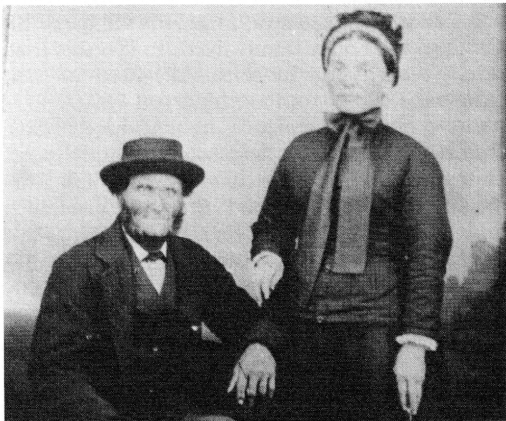

longer had a residence of their own. Simon had in his mind to settle close to his in-laws. Could it be that it might bring him closer, to end up with the stone house? On January 15, 1671, Father Henry Nouvel S.J., through the name of the congrega-tion, grants Simon Allain the rights to 2 arpents in front, 30 in depth -- approximately 60 square arpents of land at Sillery. Simon paid 3 pounds a year with the condition that he and his wife would live on this land -- and so it seems they did until 1677. Their eldest son was baptized at Sillery on December 26, 1674.
The Allains were friendly with the Jesuits. We believe this is what attracted them to Lorette, a small parish founded in 1673 by Father Chau-monot, which had 146 people living in 18 small huts in 1681. Different writings indicate that the Allains lived where the Hurons raised their tents for some thirty years.
By September 1681, Simon Allain purchased from a settler of Lorette -- a cow, a bull, two pigs and the wheat crop for 100 pounds. According to the census that year, the Allain family was situ-ated at Petite Auvergne, seigneurie Notre Dame des Anges. Simon owned one gun, four animals and fifteen arpents of land under cultivation.
In 1682 Simon signed a favorable agreement in which he promised to clear 4 arpents of land and have it ready for seed before August 15 and, for all this work, he was to receive only 20 bushels of wheat from Mathieu Gué. Simon had signed the documents.
By September of this same year Simon felt the squeeze and went to the notary's office accom-panied by his father-in-law, Maufait. Simon swallowed his pride and asked for the 75 pounds that would have eventually been his wife's inheri-tance. His wife is bedridden at this time. Pierre Maufait (the father-in-law) "bled himself white" to clear his son-in-law.
This episode must have hurt Simon's pride very much. This may be the reason for the twelve, rather secluded, years of his remaining life.
There is no proof of the time of his death but one thing is certain; by 1694 he had died because there is proof that his wife Jeanne, now a widow, was living in Lorette and married Jean Poitras, a young whipper-snapper of 24 years, in 1694. He promised he would put in 300 pounds towards the new community. Jeanne, in return, promises to take stock of whatever she owns, and we con-clude that they were married on June 6, 1694 in Notre Dame of Lorette even though there is nothing to prove it.
Jeanne passed away in 1742; it is believed she was 86 years old but the church records indicate that on February 11, 1742, Marie Jeanne was buried after receiving the last sacraments at the age of 92 or so!
The Allain couple had 5 children, 2 girls and 3 boys. Pierre and his wife had 11 children. Noel Simon and his wife had 14 children while Catherine had 10 children. There is no informa-tion on Jeanne and Nicolet.
The church records contain many Allain mar-riages and deaths. Approximately 300 marriages from the beginning to the present time and the family is still growing.
Father Lebel noted in conversation with us that he discovered Simon Allain was not a promi-nent citizen; however, he had a love of God.
FROM SIMON ALLAIN TO HENRI ALAIN
Although Simon Allain emigrated to Canada in 1664, little is known of the generations that followed, other than the direct lineage (see Alain Genealogy). However, we know the family increased as there were many "Alains" recorded in the Canadian census returns for Quebec. We also found that the family never moved too far away from the site of their original roots in Quebec.
From Simon we move to our sixth generation: Jacques Alain who was born in Quebec on November 28, 1820 and later married Angele Leclerc on February 7, 1842 at Notre Dame de Quebec.
